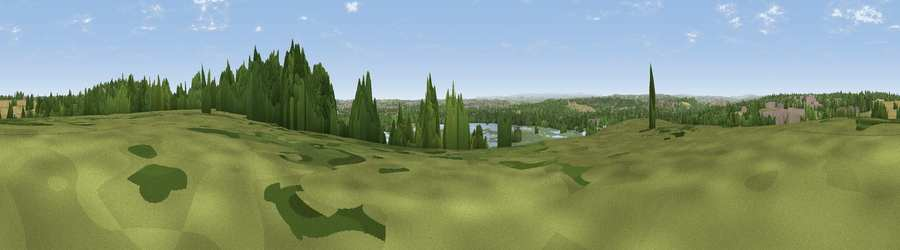

Viewpoint near Great Preston
#33342 in England · top 59% of its area beats it · near Great Preston · path 131 mWhere it is
The exact computed spot (SE 39275 29225). Click the marker for map links.
Public access: the nearest public right of way is about 131 m away — the final stretch may cross private land. Computed from Natural England's CRoW access layer and OpenStreetMap rights of way — not the legal definitive map. Always verify locally.
The view, rendered

A 360° render of this exact spot computed from the terrain model, tree cover and land cover — summer colours, afternoon light, calibrated against photographs of famous viewpoints. Real trees, hedges and buildings will differ in detail.
The panorama
Grey silhouette: terrain skyline in each direction (720 bearings, Earth curvature and refraction included). Dashed green: skyline with trees (+15 m) and buildings (+8 m) as obstacles. Blue strip: how far the ground is visible on each bearing.
Where the view opens
Wedge length = distance to the farthest visible ground on that bearing (vegetation-aware). Rings at 10, 25 and 50 km.
What fills the view
30% grassland · 26% woodland · 16% cropland · 16% built-up · 8% water · 3% wetland
Angular shares of the visible panorama (visual magnitude), not map area. Landscape diversity 0.71 (0–1 Shannon).
Key numbers
More beautiful places nearby
The staircase of upgrades: each row has a higher view potential than everything closer. Driving times are estimates from straight-line distance, calibrated against real road routing — check an actual route before setting out.
| Place | Direction | Drive | Score |
|---|---|---|---|
| Viewpoint near Great Preston | WSW · 0 km | ~1 min | 52.2 |
| Roach Hill | NE · 3 km | ~8 min | 54.1 |
| Viewpoint near Micklefield | ENE · 6 km | ~12 min | 65.7 |
| Viewpoint near Woolley | SSW · 19 km | ~32 min | 66.2 |
| Rawdon Trig point | WNW · 20 km | ~34 min | 69.6 |
| Rawdon Billing | WNW · 20 km | ~35 min | 72.7 |
| Viewpoint near Otley | NW · 24 km | ~40 min | 77.5 |
| Hood Hill | NNE · 53 km | ~75 min | 79.6 |
53.75791, -1.40578 · source: screening · position refined by local search. Computed location — check access rights before visiting.